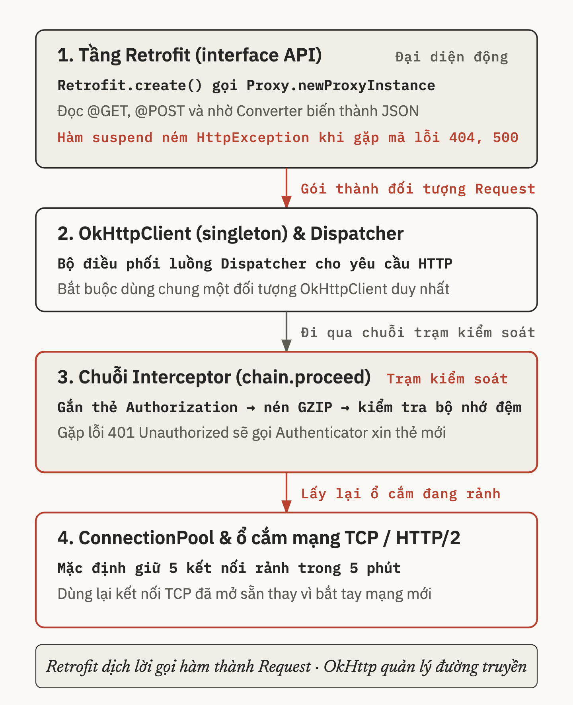

Retrofit & OkHttp
Bản 30 giây
Nếu tự mở kết nối mạng bằng thư viện gốc, bạn phải tự ghép chuỗi URL, tự đóng luồng và chuyển JSON sang đối tượng. Retrofit cho phép bạn khai báo API như một hàm Kotlin bình thường, rồi giao việc truyền tải thật ở bên dưới cho OkHttp. OkHttp tự giữ lại đường truyền cũ để gọi lần sau nhanh hơn và cho phép gắn trạm kiểm soát chung ở một nơi.
Cần biết trước
Vấn đề buộc nó ra đời
Thời kỳ đầu của Android, lập trình viên gọi mạng bằng Apache HTTP Client hoặc HttpURLConnection. Với mỗi API, bạn phải tự mở luồng đọc byte và tự nối tham số vào chuỗi URL. Bạn cũng phải tự bắt lỗi đóng kết nối trong khối finally.
Nếu quên đóng luồng đọc, ứng dụng sẽ bị rò rỉ tài nguyên. Việc mở kết nối TCP mới ở mỗi lần gọi cũng làm tốn hàng trăm mili-giây bắt tay mạng. Sau đó, Google cũng ngừng hỗ trợ rồi gỡ hẳn Apache HTTP Client khỏi đường dẫn mặc định từ Android 6.0 (API 23).
Tháng 5/2013, đội ngũ Square giới thiệu OkHttp và Retrofit để tách hẳn việc khai báo API khỏi tầng vận chuyển mạng. Từ bản Retrofit 2.6.0, thư viện tích hợp sẵn từ khóa suspend để gọi mạng bất đồng bộ trực tiếp trong Coroutines.
Nó thực sự là cái gì
Retrofit không phải là công cụ tự mở kết nối mạng xuống máy chủ. Nó chỉ là lớp vỏ biến interface của bạn thành yêu cầu HTTP. Lúc ứng dụng chạy, nó dùng đối tượng đại diện động Proxy.newProxyInstance để đón lệnh gọi hàm và đọc các đánh dấu như @GET, @POST. Động cơ thực sự giữ ổ cắm mạng TCP, nén dữ liệu GZIP và quản lý luồng ở tầng dưới chính là OkHttpClient.
Cơ chế

Khi gọi hàm trong interface, đối tượng đại diện của Retrofit gom tham số và nhờ Converter biến đối tượng thành JSON. Tiếp đó, nó gói thông tin thành đối tượng Request rồi chuyển xuống cho OkHttpClient điều phối qua Dispatcher. Yêu cầu đi xuyên qua chuỗi trạm kiểm soát Interceptor: gắn thêm tiêu đề, kiểm tra bộ nhớ đệm, rồi mở kết nối. Tại đây, ConnectionPool của OkHttp lấy lại ổ cắm đang rảnh (mặc định giữ 5 kết nối trong 5 phút) thay vì mở TCP mới.
Đánh đổi
Bạn viết gọi mạng gọn như gọi hàm nội bộ. Ứng dụng cũng tận dụng được kết nối HTTP/2 dùng chung và gắn mã xác thực tập trung ở một Interceptor. Đổi lại, việc dùng phản chiếu (reflection) lúc khởi tạo Proxy.newProxyInstance tốn thêm chu kỳ CPU ở lần gọi đầu tiên. Bước phân tích JSON sang đối tượng cũng tiêu tốn thêm thời gian xử lý.
Nguyên lý gốc
Tách lớp mô tả hợp đồng dữ liệu ở tầng trên ra khỏi động cơ quản lý đường truyền ở tầng dưới. Nhờ đó, hệ thống tái sử dụng được kết nối mạng hiệu quả.
Key insight
Retrofitkhông tự gửi một byte nào qua mạng, nó chỉ dùngProxy.newProxyInstancedịch lời gọi hàm thànhRequestchoOkHttpchạy.
Khuôn mẫu chuẩn
interface UserApi {
@GET("users/{id}")
suspend fun getUser(@Path("id") id: String): UserDto
}
val okHttp = OkHttpClient.Builder()
.addInterceptor { chain -> chain.proceed(chain.request()) }
.build()
val api = Retrofit.Builder().baseUrl("https://api.example.com/").client(okHttp).build()
.create(UserApi::class.java)
Bẫy & ranh giới
Nếu mỗi lần gọi API bạn lại tạo mới một OkHttpClient(), bạn sẽ phá hỏng hoàn toàn hồ tái sử dụng kết nối ConnectionPool. Lúc đó mỗi yêu cầu tự mở bể luồng Dispatcher và ổ cắm riêng, làm ngốn RAM và cạn cổng kết nối. Với hàm suspend trả thẳng đối tượng, khi gặp mã lỗi 404 hay 500 thì Retrofit ném HttpException làm sập coroutine nếu thiếu try-catch. Đừng bật HttpLoggingInterceptor ở mức Level.BODY khi tải file lớn vì nó sẽ đọc toàn bộ file vào RAM gây lỗi OutOfMemoryError.
Câu hỏi thực chiến
Hỏi: Trong hàm suspend của Retrofit, làm sao lấy được mã lỗi 400 hay 500 mà không bị ném văng HttpException?
Bạn có hai cách: hoặc bọc lời gọi hàm suspend trong khối try-catch để bắt riêng HttpException và IOException. Hoặc bạn khai báo kiểu trả về là Response<UserDto>, lúc đó Retrofit không ném HttpException mà cho bạn kiểm tra response.isSuccessful.
Hỏi: Vì sao ứng dụng bắt buộc phải dùng chung một đối tượng OkHttpClient duy nhất (singleton)?
Vì bên trong mỗi OkHttpClient chứa riêng một hồ kết nối ConnectionPool và một bộ điều phối luồng Dispatcher. Chỉ khi dùng chung một đối tượng duy nhất, các lần gọi API liên tiếp mới dùng lại được kết nối TCP đã mở sẵn.
Hỏi: Khi nào tôi nên tự cài đặt Authenticator thay vì dùng Interceptor thường để gắn token đăng nhập?
Bạn dùng Interceptor thường để đính kèm sẵn thẻ Authorization vào đầu mỗi yêu cầu gửi đi. Khi máy chủ trả lỗi 401 Unauthorized báo thẻ hết hạn, OkHttp sẽ gọi Authenticator. Tại đây bạn xin thẻ mới rồi tự gửi lại yêu cầu.
Hỏi: Có nên gọi hàm Retrofit.create() lại mỗi lần bấm nút gọi API trên màn hình không?
Không nên. Mỗi lần gọi create(), Retrofit tạo thêm một đối tượng Proxy mới chỉ để làm đúng việc của đối tượng cũ. Bạn gọi create() một lần rồi giữ lại, thường qua DI.
Ý bắt buộc khi giải thích lại
- Giải thích được vai trò của từng bên: Retrofit dùng Proxy.newProxyInstance biến interface thành Request, còn OkHttp quản lý đường truyền TCP.
- Trình bày được luồng đi của Request qua chuỗi Interceptor và cách ConnectionPool giữ lại kết nối rảnh (mặc định 5 kết nối trong 5 phút).
- Chỉ ra được hậu quả khi tạo nhiều OkHttpClient, bẫy sập coroutine do HttpException khi mã trả về ngoài khoảng 2xx và bẫy OOM khi log Level.BODY với file lớn.
- Viết lại được khuôn mẫu chuẩn từ trí nhớ.
Nguồn
- OkHttp Overview — Square
- Retrofit Overview — Square
- Interceptors — OkHttp
- ConnectionPool API reference — OkHttp